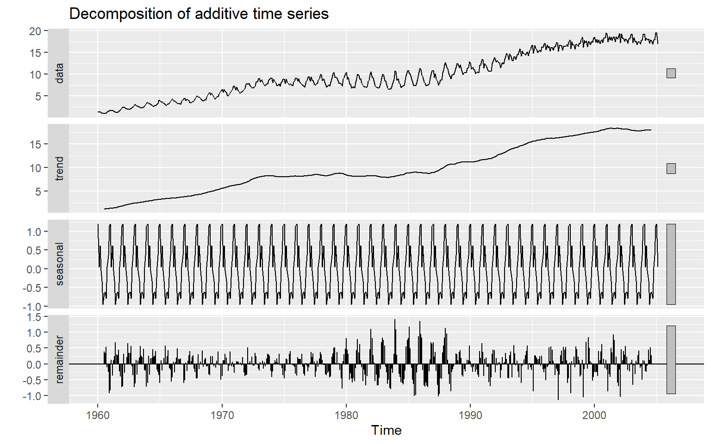
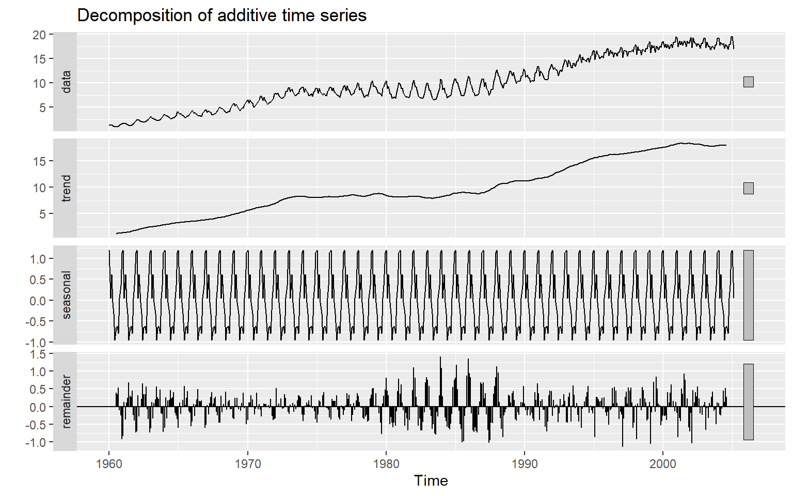

library(forecast)
library(expsmooth) # use a dataset cangas here
library(ggplot2)
ts_data = cangas
ts_data |> ggAcf()
Decompose a time series into seasonal, trend and irregular components
stats::decompose(ts_data, type = c(“additive”, “multiplicative”)) Decompose a time series into seasonal, trend and irregular components using moving average.library(forecast)
library(expsmooth) # use a dataset cangas here
library(ggplot2)
ts_data = cangas
ts_data |> ggAcf()
stats::stl(ts_data, s.window) Decompose a time series into seasonal, trend and irregular components using loess.$time.series
seasonal trend remainder
Jan 1960 1.02190188 0.7495630 -0.3408648970
Feb 1960 0.20665601 0.8812904 0.2179535567
Mar 1960 0.61819325 1.0130179 -0.2290110999
Apr 1960 -0.02921181 1.1287898 0.0703220314
May 1960 -0.28773303 1.2445617 0.1592713174
Jun 1960 -0.89898935 1.3429699 0.5673194168
Jul 1960 -0.63692484 1.4413782 0.1615466876
Aug 1960 -0.57260730 1.4087335 0.1411738201
Sep 1960 -0.76779277 1.3760888 0.4228039756
Oct 1960 0.06059580 1.3051534 -0.1136492129
Nov 1960 0.32721448 1.2342180 -0.1195325095
Dec 1960 0.95869770 1.2179881 -0.6129857933
Jan 1961 1.02190188 1.2017582 -0.4786600422
Feb 1961 0.20665601 1.2755296 0.1013143468
Mar 1961 0.61819325 1.3493011 -0.2904943745
Apr 1961 -0.02921181 1.4833129 0.0613988666
May 1961 -0.28773303 1.6173248 0.0755082623
Jun 1961 -0.89898935 1.6856974 0.4596919686
Jul 1961 -0.63692484 1.7540700 0.1066548463
Aug 1961 -0.57260730 1.7361382 0.1281691055
Sep 1961 -0.76779277 1.7182064 0.4036863876
Oct 1961 0.06059580 1.6938172 -0.1992130190
Nov 1961 0.32721448 1.6694281 -0.2318425338
Dec 1961 0.95869770 1.6979770 -0.4017747077
Jan 1962 1.02190188 1.7265260 -0.3320278467
Feb 1962 0.20665601 1.8507321 0.2910118732
Mar 1962 0.61819325 1.9749383 -0.2079315172
Apr 1962 -0.02921181 2.1348259 -0.0405140958
May 1962 -0.28773303 2.2947136 0.0524194802
Jun 1962 -0.89898935 2.3716658 0.4536235699
Jul 1962 -0.63692484 2.4486180 0.1514068310
Aug 1962 -0.57260730 2.4336911 0.1785161790
Sep 1962 -0.76779277 2.4187642 0.4594285500
Oct 1962 0.06059580 2.3659325 -0.0838282531
Nov 1962 0.32721448 2.3131007 -0.2183151643
Dec 1962 0.95869770 2.2998369 -0.4031345652
Jan 1963 1.02190188 2.2865731 -0.2518749312
Feb 1963 0.20665601 2.3670754 0.1060686060
Mar 1963 0.61819325 2.4475777 -0.2556709669
Apr 1963 -0.02921181 2.5676341 0.0478777517
May 1963 -0.28773303 2.6876904 0.0674426249
Jun 1963 -0.89898935 2.7501480 0.3895413148
Jul 1963 -0.63692484 2.8126057 0.0905191759
Aug 1963 -0.57260730 2.7971426 0.0643646638
Sep 1963 -0.76779277 2.7816796 0.4166131747
Oct 1963 0.06059580 2.7486907 -0.1747865003
Nov 1963 0.32721448 2.7157018 -0.0713162834
Dec 1963 0.95869770 2.7278607 -0.4288584304
Jan 1964 1.02190188 2.7400197 -0.2747215425
Feb 1964 0.20665601 2.8251743 0.2003697342
Mar 1964 0.61819325 2.9103289 -0.2821220992
Apr 1964 -0.02921181 3.0270372 0.1125746291
May 1964 -0.28773303 3.1437455 0.0277875121
Jun 1964 -0.89898935 3.2008458 0.2901435384
Jul 1964 -0.63692484 3.2579461 0.0785787362
Aug 1964 -0.57260730 3.2476167 0.1209905662
Sep 1964 -0.76779277 3.2372874 0.3265054191
Oct 1964 0.06059580 3.2023293 -0.1893251192
Nov 1964 0.32721448 3.1673713 -0.1546857657
Dec 1964 0.95869770 3.1626102 -0.0648079081
Jan 1965 1.02190188 3.1578491 -0.2790510155
Feb 1965 0.20665601 3.2217406 0.0503033640
Mar 1965 0.61819325 3.2856321 -0.1475253667
Apr 1965 -0.02921181 3.3695284 -0.0231166124
May 1965 -0.28773303 3.4534247 0.0892082966
Jun 1965 -0.89898935 3.4994649 0.4306244062
Jul 1965 -0.63692484 3.5455052 -0.0899803129
Aug 1965 -0.57260730 3.5288551 0.1229521531
Sep 1965 -0.76779277 3.5122051 0.3772876421
Oct 1965 0.06059580 3.4724795 -0.1393752913
Nov 1965 0.32721448 3.4327539 -0.0688683328
Dec 1965 0.95869770 3.4238297 -0.2835273632
Jan 1966 1.02190188 3.4149055 -0.1026073586
Feb 1966 0.20665601 3.4741911 0.0102528504
Mar 1966 0.61819325 3.5334768 -0.2169700507
Apr 1966 -0.02921181 3.6102576 0.0165542042
May 1966 -0.28773303 3.6870384 0.0991946139
Jun 1966 -0.89898935 3.7363302 0.3636591285
Jul 1966 -0.63692484 3.7856220 0.0325028144
Aug 1966 -0.57260730 3.7784050 0.0037022479
Sep 1966 -0.76779277 3.7711881 0.0985047044
Oct 1966 0.06059580 3.7375745 -0.0277702735
Nov 1966 0.32721448 3.7039609 0.1188246404
Dec 1966 0.95869770 3.7170618 -0.3274595432
Jan 1967 1.02190188 3.7301628 -0.2309646919
Feb 1967 0.20665601 3.7923380 -0.0443940394
Mar 1967 0.61819325 3.8545132 -0.1640064971
Apr 1967 -0.02921181 3.9459145 0.0661973247
May 1967 -0.28773303 4.0373157 0.1625173012
Jun 1967 -0.89898935 4.0926080 0.2481813303
Jul 1967 -0.63692484 4.1479003 -0.0521754692
Aug 1967 -0.57260730 4.1403764 0.1177308519
Sep 1967 -0.76779277 4.1328526 0.2410401958
Oct 1967 0.06059580 4.1229499 -0.1326457065
Nov 1967 0.32721448 4.1130472 -0.1514617170
Dec 1967 0.95869770 4.1319290 -0.2012267057
Jan 1968 1.02190188 4.1508108 -0.1785126595
Feb 1968 0.20665601 4.2199187 0.2135253022
Mar 1968 0.61819325 4.2890266 -0.1311198462
Apr 1968 -0.02921181 4.3758947 0.0328171206
May 1968 -0.28773303 4.4627628 -0.0590297580
Jun 1968 -0.89898935 4.5287932 0.3247961276
Jul 1968 -0.63692484 4.5948237 -0.1505988154
Aug 1968 -0.57260730 4.6372644 0.0570429218
Sep 1968 -0.76779277 4.6797051 0.1502876819
Oct 1968 0.06059580 4.7174649 -0.0727607294
Nov 1968 0.32721448 4.7552248 0.0023607512
Dec 1968 0.95869770 4.8110562 -0.1240538538
Jan 1969 1.02190188 4.8668875 -0.1693894239
Feb 1969 0.20665601 4.9230950 0.0882490180
Mar 1969 0.61819325 4.9793024 0.0369043497
Apr 1969 -0.02921181 5.0508679 0.2303439518
May 1969 -0.28773303 5.1224333 -0.1096002915
Jun 1969 -0.89898935 5.1876961 -0.0622067978
Jul 1969 -0.63692484 5.2529590 -0.1629341327
Aug 1969 -0.57260730 5.2960406 0.0384666733
Sep 1969 -0.76779277 5.3391223 0.3690705023
Oct 1969 0.06059580 5.3976369 -0.0447326595
Nov 1969 0.32721448 5.4561514 0.0748340706
Dec 1969 0.95869770 5.5290826 -0.2896803162
Jan 1970 1.02190188 5.6020138 -0.1765156680
Feb 1970 0.20665601 5.6737729 -0.0392288827
Mar 1970 0.61819325 5.7455320 0.1063747923
Apr 1970 -0.02921181 5.8227338 0.2714780311
May 1970 -0.28773303 5.8999356 0.1326974246
Jun 1970 -0.89898935 5.9631716 -0.0699822074
Jul 1970 -0.63692484 6.0264075 -0.2451826680
Aug 1970 -0.57260730 6.0661360 -0.1055287121
Sep 1970 -0.76779277 6.1058645 0.3841282666
Oct 1970 0.06059580 6.1523189 -0.0913147306
Nov 1970 0.32721448 6.1987734 0.0970121640
Dec 1970 0.95869770 6.2420990 0.0710032964
Jan 1971 1.02190188 6.2854247 -0.1120265364
Feb 1971 0.20665601 6.3170879 -0.1613439504
Mar 1971 0.61819325 6.3487512 0.1065555254
Apr 1971 -0.02921181 6.3910290 0.0544828552
May 1971 -0.28773303 6.4333067 0.0214263396
Jun 1971 -0.89898935 6.4727120 -0.0668226568
Jul 1971 -0.63692484 6.5121173 0.0085075183
Aug 1971 -0.57260730 6.5466074 -0.0591001277
Sep 1971 -0.76779277 6.5810975 0.2828952492
Oct 1971 0.06059580 6.6649446 -0.2016403959
Nov 1971 0.32721448 6.7487917 -0.2802061492
Dec 1971 0.95869770 6.8561211 -0.1153187557
Jan 1972 1.02190188 6.9634505 -0.1102523273
Feb 1972 0.20665601 7.0980726 0.3720713766
Mar 1972 0.61819325 7.2326948 0.0072119703
Apr 1972 -0.02921181 7.3601441 0.0286677162
May 1972 -0.28773303 7.4875934 -0.0725603832
Jun 1972 -0.89898935 7.5937731 0.1549162582
Jul 1972 -0.63692484 7.6999528 -0.1000279290
Aug 1972 -0.57260730 7.7825557 -0.1364484465
Sep 1972 -0.76779277 7.8651587 0.2593340589
Oct 1972 0.06059580 7.9212423 0.1850618759
Nov 1972 0.32721448 7.9773259 0.0096595848
Dec 1972 0.95869770 8.0143112 -0.0044088865
Jan 1973 1.02190188 8.0512964 -0.0507983229
Feb 1973 0.20665601 8.0690408 -0.0945968321
Mar 1973 0.61819325 8.0867852 0.0540215485
Apr 1973 -0.02921181 8.1276198 0.1024919758
May 1973 -0.28773303 8.1684545 -0.1557214421
Jun 1973 -0.89898935 8.2253545 0.0133348599
Jul 1973 -0.63692484 8.2822545 -0.1441296667
Aug 1973 -0.57260730 8.3071021 0.0443052421
Sep 1973 -0.76779277 8.3319496 0.1920431738
Oct 1973 0.06059580 8.3154937 0.2186105303
Nov 1973 0.32721448 8.2990377 0.2403477786
Dec 1973 0.95869770 8.2692151 -0.0638128051
Jan 1974 1.02190188 8.2393925 -0.2190943539
Feb 1974 0.20665601 8.2041988 -0.3487547592
Mar 1974 0.61819325 8.1690050 0.0794017254
Apr 1974 -0.02921181 8.1673441 0.1080676960
May 1974 -0.28773303 8.1656832 -0.0028501787
Jun 1974 -0.89898935 8.1581726 0.0692167882
Jul 1974 -0.63692484 8.1506619 -0.0465370735
Aug 1974 -0.57260730 8.1078867 0.2265206363
Sep 1974 -0.76779277 8.0651114 -0.0822186309
Oct 1974 0.06059580 8.0233265 0.0319776818
Nov 1974 0.32721448 7.9815416 -0.0370561137
Dec 1974 0.95869770 7.9808158 -0.1012135041
Jan 1975 1.02190188 7.9800900 -0.1834918597
Feb 1975 0.20665601 8.0216672 -0.3107232085
Mar 1975 0.61819325 8.0632444 0.1936623324
Apr 1975 -0.02921181 8.1180192 0.0950925681
May 1975 -0.28773303 8.1727941 -0.1090610417
Jun 1975 -0.89898935 8.1955991 0.1960902953
Jul 1975 -0.63692484 8.2184040 0.2993208036
Aug 1975 -0.57260730 8.2049415 -0.0886342172
Sep 1975 -0.76779277 8.1914790 -0.0555862150
Oct 1975 0.06059580 8.1720849 -0.0317807032
Nov 1975 0.32721448 8.1526908 -0.0014052995
Dec 1975 0.95869770 8.1623776 -0.0816753356
Jan 1976 1.02190188 8.1720645 -0.1545663368
Feb 1976 0.20665601 8.1926001 0.0339438677
Mar 1976 0.61819325 8.2131358 0.0975709620
Apr 1976 -0.02921181 8.2036830 0.0661287750
May 1976 -0.28773303 8.1942303 0.0763027427
Jun 1976 -0.89898935 8.1761453 0.2552440315
Jul 1976 -0.63692484 8.1580603 -0.0794355082
Aug 1976 -0.57260730 8.1552733 -0.3052659951
Sep 1976 -0.76779277 8.1524862 -0.3196934591
Oct 1976 0.06059580 8.1812055 0.0865987132
Nov 1976 0.32721448 8.2099247 0.0575607774
Dec 1976 0.95869770 8.2949681 -0.0442658133
Jan 1977 1.02190188 8.3800115 0.0255866308
Feb 1977 0.20665601 8.4314457 -0.2021017038
Mar 1977 0.61819325 8.4828799 0.2896268515
Apr 1977 -0.02921181 8.4933713 0.1333405156
May 1977 -0.28773303 8.5038627 0.2510703343
Jun 1977 -0.89898935 8.5070182 0.0206711470
Jul 1977 -0.63692484 8.5101737 -0.3805488690
Aug 1977 -0.57260730 8.5215248 -0.2296175099
Sep 1977 -0.76779277 8.5328759 0.1100168721
Oct 1977 0.06059580 8.5473285 -0.1322242932
Nov 1977 0.32721448 8.5617811 0.1221044333
Dec 1977 0.95869770 8.5335291 0.4224731557
Jan 1978 1.02190188 8.5052772 0.3564209131
Feb 1978 0.20665601 8.4211680 -0.0785239975
Mar 1978 0.61819325 8.3370588 -0.0376520183
Apr 1978 -0.02921181 8.2373861 -0.0015742615
May 1978 -0.28773303 8.1377134 -0.2184803501
Jun 1978 -0.89898935 8.1145269 -0.2270375586
Jul 1978 -0.63692484 8.0913404 -0.0750155958
Aug 1978 -0.57260730 8.1974753 -0.1094679901
Sep 1978 -0.76779277 8.3036101 -0.3264173615
Oct 1978 0.06059580 8.4538927 -0.3843885181
Nov 1978 0.32721448 8.6041753 0.2100102171
Dec 1978 0.95869770 8.7218577 0.3984446399
Jan 1979 1.02190188 8.8395400 0.5246580976
Feb 1979 0.20665601 8.8851336 0.1879104161
Mar 1979 0.61819325 8.9307271 -0.1794203756
Apr 1979 -0.02921181 8.8558960 0.2437157691
May 1979 -0.28773303 8.7810650 -0.0154319314
Jun 1979 -0.89898935 8.7350643 0.0303250702
Jul 1979 -0.63692484 8.6890636 -0.1018387568
Aug 1979 -0.57260730 8.7095849 -0.4301775695
Sep 1979 -0.76779277 8.7301061 -0.7611133592
Oct 1979 0.06059580 8.7479422 0.0190619525
Nov 1979 0.32721448 8.7657784 0.1867071560
Dec 1979 0.95869770 8.7280235 0.4604788381
Jan 1980 1.02190188 8.6902686 0.7545295550
Feb 1980 0.20665601 8.5493308 0.1212131797
Mar 1980 0.61819325 8.4083931 0.2534136941
Apr 1980 -0.02921181 8.2211573 -0.4497455355
May 1980 -0.28773303 8.0339216 -0.1121886105
Jun 1980 -0.89898935 7.9376431 -0.2145537246
Jul 1980 -0.63692484 7.8413645 -0.2444396673
Aug 1980 -0.57260730 7.9079120 -0.2427046740
Sep 1980 -0.76779277 7.9744594 -0.3918666578
Oct 1980 0.06059580 8.0851770 -0.0896728250
Nov 1980 0.32721448 8.1958946 0.4153908997
Dec 1980 0.95869770 8.2544235 0.8417787576
Jan 1981 1.02190188 8.3129525 0.3858456504
Feb 1981 0.20665601 8.2887760 0.3385680027
Mar 1981 0.61819325 8.2645995 0.0043072449
Apr 1981 -0.02921181 8.1409888 -0.0838769493
May 1981 -0.28773303 8.0173780 -0.4206449887
Jun 1981 -0.89898935 7.9713463 -0.0411569487
Jul 1981 -0.63692484 7.9253146 -0.1012897373
Aug 1981 -0.57260730 7.9917206 -0.4751133108
Sep 1981 -0.76779277 8.0581266 -0.2057338614
Oct 1981 0.06059580 8.1760255 0.0578787185
Nov 1981 0.32721448 8.2939243 0.0152611901
Dec 1981 0.95869770 8.3276719 0.5902304451
Jan 1982 1.02190188 8.3614194 1.1903787349
Feb 1982 0.20665601 8.3247258 0.5691182294
Mar 1982 0.61819325 8.2880321 0.2211746136
Apr 1982 -0.02921181 8.1510880 0.0670237923
May 1982 -0.28773303 8.0141439 -0.3901108745
Jun 1982 -0.89898935 7.8855659 -0.0520765336
Jul 1982 -0.63692484 7.7569879 -0.2501630213
Aug 1982 -0.57260730 7.7459237 -0.3204164453
Sep 1982 -0.76779277 7.7348596 -0.1003668463
Oct 1982 0.06059580 7.7908514 0.0682528164
Nov 1982 0.32721448 7.8468431 0.8705423709
Dec 1982 0.95869770 7.8472886 1.1186136712
Jan 1983 1.02190188 7.8477341 1.0229640065
Feb 1983 0.20665601 7.8442060 0.4869379667
Mar 1983 0.61819325 7.8406779 -0.0152711833
Apr 1983 -0.02921181 7.7019789 -0.0714671210
May 1983 -0.28773303 7.5632799 -0.3291469041
Jun 1983 -0.89898935 7.5506753 -0.1772859619
Jul 1983 -0.63692484 7.5380707 -0.3373458483
Aug 1983 -0.57260730 7.6396601 -0.4674528009
Sep 1983 -0.76779277 7.7412495 0.1244432695
Oct 1983 0.06059580 7.8672793 -0.0921750625
Nov 1983 0.32721448 7.9933090 0.4711764973
Dec 1983 0.95869770 8.0677405 1.6859617826
Jan 1984 1.02190188 8.1421720 1.3538261027
Feb 1984 0.20665601 8.1684662 0.2448777900
Mar 1984 0.61819325 8.1947604 0.1238463672
Apr 1984 -0.02921181 8.1297730 -0.1036612043
May 1984 -0.28773303 8.0647857 -0.0850526210
Jun 1984 -0.89898935 8.0791258 -0.2271364552
Jul 1984 -0.63692484 8.0934660 -0.2236411180
Aug 1984 -0.57260730 8.2294868 -0.3581795331
Sep 1984 -0.76779277 8.3655077 -0.1986149253
Oct 1984 0.06059580 8.5570979 -0.0259937011
Nov 1984 0.32721448 8.7486881 0.6351974150
Dec 1984 0.95869770 8.7931678 0.9759345068
Jan 1985 1.02190188 8.8376475 1.0282506336
Feb 1985 0.20665601 8.9003404 1.0020035576
Mar 1985 0.61819325 8.9630334 0.4495733714
Apr 1985 -0.02921181 8.8153860 -0.0007741614
May 1985 -0.28773303 8.6677386 -0.2116055395
Jun 1985 -0.89898935 8.5962040 -0.2463146210
Jul 1985 -0.63692484 8.5246694 -0.4905445310
Aug 1985 -0.57260730 8.5706590 -0.5380517473
Sep 1985 -0.76779277 8.6166487 0.1150440594
Oct 1985 0.06059580 8.6423279 0.2555763246
Nov 1985 0.32721448 8.6680070 1.1528784816
Dec 1985 0.95869770 8.6290876 1.7918147168
Jan 1986 1.02190188 8.5901681 1.4265299869
Feb 1986 0.20665601 8.5418981 1.0168458551
Mar 1986 0.61819325 8.4936281 0.2048786130
Apr 1986 -0.02921181 8.3892233 -0.2136114990
May 1986 -0.28773303 8.2848185 -0.1639854564
Jun 1986 -0.89898935 8.3324332 -0.1326438088
Jul 1986 -0.63692484 8.3800478 -0.2862229899
Aug 1986 -0.57260730 8.5511854 -0.5574780655
Sep 1986 -0.76779277 8.7223229 -0.1923301181
Oct 1986 0.06059580 8.8806975 0.1067066987
Nov 1986 0.32721448 9.0390721 0.5890134073
Dec 1986 0.95869770 9.1325475 0.6166547868
Jan 1987 1.02190188 9.2260229 0.5975752011
Feb 1987 0.20665601 9.1899850 -0.0872410033
Mar 1987 0.61819325 9.1539471 0.3298596821
Apr 1987 -0.02921181 9.1091195 -0.1603076796
May 1987 -0.28773303 9.0642919 -0.4615588866
Jun 1987 -0.89898935 9.1592587 -0.8383693181
Jul 1987 -0.63692484 9.2542254 -0.6936005783
Aug 1987 -0.57260730 9.4741097 -0.2779024242
Sep 1987 -0.76779277 9.6939940 -0.3418012473
Oct 1987 0.06059580 9.9456445 0.3506596601
Nov 1987 0.32721448 10.1972951 0.4835904593
Dec 1987 0.95869770 10.2987222 0.8881801139
Jan 1988 1.02190188 10.4001493 1.2375488033
Feb 1988 0.20665601 10.4478870 0.8157569757
Mar 1988 0.61819325 10.4956247 0.2061820379
Apr 1988 -0.02921181 10.4440148 -0.1510030072
May 1988 -0.28773303 10.3924049 -0.3760718977
Jun 1988 -0.89898935 10.4269937 -0.6142043345
Jul 1988 -0.63692484 10.4615824 -0.0074576000
Aug 1988 -0.57260730 10.5901070 -0.0921997393
Sep 1988 -0.76779277 10.7186316 -0.0731388557
Oct 1988 0.06059580 10.8779579 -0.0715537364
Nov 1988 0.32721448 11.0372842 0.2307012747
Dec 1988 0.95869770 11.1328873 0.3162149607
Jan 1989 1.02190188 11.2284904 0.0953076816
Feb 1989 0.20665601 11.2227114 0.0734325441
Mar 1989 0.61819325 11.2169325 0.3343742964
Apr 1989 -0.02921181 11.1697953 0.1510164835
May 1989 -0.28773303 11.1226582 -0.3295251747
Jun 1989 -0.89898935 11.0995854 -0.3465960933
Jul 1989 -0.63692484 11.0765127 -0.0311878405
Aug 1989 -0.57260730 11.1157047 -0.1705973919
Sep 1989 -0.76779277 11.1548967 0.0250960796
Oct 1989 0.06059580 11.1907082 0.0725960058
Nov 1989 0.32721448 11.2265197 0.0839658238
Dec 1989 0.95869770 11.2266962 0.7226060955
Jan 1990 1.02190188 11.2268727 0.2592254021
Feb 1990 0.20665601 11.2055252 -0.2510812084
Mar 1990 0.61819325 11.1841777 -0.2152709290
Apr 1990 -0.02921181 11.1523690 -0.0228572048
May 1990 -0.28773303 11.1205604 0.1302726741
Jun 1990 -0.89898935 11.1794741 -0.1533847321
Jul 1990 -0.63692484 11.2383878 -0.0501629669
Aug 1990 -0.57260730 11.3646804 -0.3252730938
Sep 1990 -0.76779277 11.4909730 -0.4521801978
Oct 1990 0.06059580 11.6041105 0.3272937227
Nov 1990 0.32721448 11.7172480 0.0905375351
Dec 1990 0.95869770 11.7896991 0.6764031798
Jan 1991 1.02190188 11.8621503 0.3659478594
Feb 1991 0.20665601 11.8570114 -0.7226673974
Mar 1991 0.61819325 11.8518725 0.0155342356
Apr 1991 -0.02921181 11.7796020 0.1505098267
May 1991 -0.28773303 11.7073315 -0.0361984275
Jun 1991 -0.89898935 11.7477595 -0.0383701022
Jul 1991 -0.63692484 11.7881874 -0.5038626055
Aug 1991 -0.57260730 11.8925495 -0.7200422072
Sep 1991 -0.76779277 11.9969116 -0.4318187859
Oct 1991 0.06059580 12.1155455 0.2639587154
Nov 1991 0.32721448 12.2341794 0.4108061085
Dec 1991 0.95869770 12.3687639 0.4824383842
Jan 1992 1.02190188 12.5033484 -0.2547503052
Feb 1992 0.20665601 12.5571271 -0.0474831549
Mar 1992 0.61819325 12.6109059 -0.0296991148
Apr 1992 -0.02921181 12.6744325 0.0782793430
May 1992 -0.28773303 12.7379591 0.0998739555
Jun 1992 -0.89898935 12.8485272 -0.4329378238
Jul 1992 -0.63692484 12.9590953 -0.1857704318
Aug 1992 -0.57260730 13.0850396 0.1396676483
Sep 1992 -0.76779277 13.2109840 -0.0502912487
Oct 1992 0.06059580 13.3328966 -0.0114923549
Nov 1992 0.32721448 13.4548091 0.2964764308
Dec 1992 0.95869770 13.5683135 0.2315887772
Jan 1993 1.02190188 13.6818180 -0.3252198415
Feb 1993 0.20665601 13.7670220 -0.6389779980
Mar 1993 0.61819325 13.8522260 0.2603807353
Apr 1993 -0.02921181 13.9529209 0.3378909618
May 1993 -0.28773303 14.0536157 -0.5295826570
Jun 1993 -0.89898935 14.1330772 -0.1345878913
Jul 1993 -0.63692484 14.2125388 0.4630860457
Aug 1993 -0.57260730 14.2569710 0.2309363196
Sep 1993 -0.76779277 14.3014032 -0.1071103836
Oct 1993 0.06059580 14.3436862 0.0418180008
Nov 1993 0.32721448 14.3859692 -0.2010837229
Dec 1993 0.95869770 14.4477910 -0.1956886784
Jan 1994 1.02190188 14.5096127 0.2718854010
Feb 1994 0.20665601 14.6306834 -0.7116394037
Mar 1994 0.61819325 14.7517541 -0.0526473187
Apr 1994 -0.02921181 14.8927276 -0.0972158131
May 1994 -0.28773303 15.0337012 0.0154318472
Jun 1994 -0.89898935 15.1358144 0.1254749388
Jul 1994 -0.63692484 15.2379276 0.2715972018
Aug 1994 -0.57260730 15.3136785 0.4137287763
Sep 1994 -0.76779277 15.3894294 -0.3125366264
Oct 1994 0.06059580 15.4438379 -0.0633336840
Nov 1994 0.32721448 15.4982464 -0.1120608497
Dec 1994 0.95869770 15.5729874 -0.0715851434
Jan 1995 1.02190188 15.6477285 0.0698695978
Feb 1995 0.20665601 15.7282091 -1.1419650666
Mar 1995 0.61819325 15.8086896 0.1278171587
Apr 1995 -0.02921181 15.8706226 0.0805891702
May 1995 -0.28773303 15.9325557 0.0119773364
Jun 1995 -0.89898935 15.9549371 -0.0502477228
Jul 1995 -0.63692484 15.9773184 0.0095063894
Aug 1995 -0.57260730 15.9836625 0.1213447856
Sep 1995 -0.76779277 15.9900066 -0.1284137954
Oct 1995 0.06059580 15.9893507 0.2178534998
Nov 1995 0.32721448 15.9886948 -0.1214093133
Dec 1995 0.95869770 16.0097631 -0.0608607874
Jan 1996 1.02190188 16.0308314 0.0939667734
Feb 1996 0.20665601 16.0920014 -0.6055574318
Mar 1996 0.61819325 16.1531715 -0.0632647472
Apr 1996 -0.02921181 16.2292791 -0.1113672527
May 1996 -0.28773303 16.3053866 0.3937463964
Jun 1996 -0.89898935 16.3421738 -0.0761844031
Jul 1996 -0.63692484 16.3789609 0.4012639688
Aug 1996 -0.57260730 16.3644569 0.2714503800
Sep 1996 -0.76779277 16.3499530 -0.0631601859
Oct 1996 0.06059580 16.3031655 -0.0833613269
Nov 1996 0.32721448 16.2563781 -0.3167925761
Dec 1996 0.95869770 16.2732362 0.0218661283
Jan 1997 1.02190188 16.2900943 -0.0413961325
Feb 1997 0.20665601 16.3617755 -1.3414315520
Mar 1997 0.61819325 16.4334568 -0.4107500817
Apr 1997 -0.02921181 16.5263833 0.1392284744
May 1997 -0.28773303 16.6193098 0.2060231851
Jun 1997 -0.89898935 16.6934819 -0.2120925885
Jul 1997 -0.63692484 16.7676540 0.2286708092
Aug 1997 -0.57260730 16.7622864 0.1623208968
Sep 1997 -0.76779277 16.7569188 0.3527740074
Oct 1997 0.06059580 16.7464810 -0.0270767679
Nov 1997 0.32721448 16.7360432 -0.6747576513
Dec 1997 0.95869770 16.7253197 -0.3585173720
Jan 1998 1.02190188 16.7145962 0.1801019421
Feb 1998 0.20665601 16.7477114 -1.1115674038
Mar 1998 0.61819325 16.7808266 0.0353801400
Apr 1998 -0.02921181 16.8632977 -0.1283858681
May 1998 -0.28773303 16.9457688 0.0475642783
Jun 1998 -0.89898935 16.9917553 -0.3093659139
Jul 1998 -0.63692484 17.0377418 0.3909830652
Aug 1998 -0.57260730 17.0628373 0.2864700111
Sep 1998 -0.76779277 17.0879328 0.0719599799
Oct 1998 0.06059580 17.1007613 -0.0098570945
Nov 1998 0.32721448 17.1135898 -0.4286042770
Dec 1998 0.95869770 17.1339723 -0.1975699509
Jan 1999 1.02190188 17.1543547 0.3151434102
Feb 1999 0.20665601 17.2234140 -1.2096699851
Mar 1999 0.61819325 17.2924732 -0.1954664906
Apr 1999 -0.02921181 17.3741627 -0.0977508736
May 1999 -0.28773303 17.4558521 0.5194808980
Jun 1999 -0.89898935 17.4901378 -0.3501484162
Jul 1999 -0.63692484 17.5244234 0.6576014410
Aug 1999 -0.57260730 17.5203954 0.3455119390
Sep 1999 -0.76779277 17.5163673 0.0226254599
Oct 1999 0.06059580 17.4755022 0.0306019697
Nov 1999 0.32721448 17.4346371 -0.4397516287
Dec 1999 0.95869770 17.4119651 -0.1085627849
Jan 2000 1.02190188 17.3892930 0.1196050937
Feb 2000 0.20665601 17.4714591 -0.2889151404
Mar 2000 0.61819325 17.5536252 -0.1493184846
Apr 2000 -0.02921181 17.6839893 -0.3943774957
May 2000 -0.28773303 17.8143534 0.3346796479
Jun 2000 -0.89898935 17.9230262 0.0068631206
Jul 2000 -0.63692484 18.0316991 0.2814257647
Aug 2000 -0.57260730 18.1064860 0.4466213432
Sep 2000 -0.76779277 18.1812728 -0.2061800554
Oct 2000 0.06059580 18.1905935 0.0139107014
Nov 2000 0.32721448 18.1999142 -0.1948286500
Dec 2000 0.95869770 18.2019611 0.2753412107
Jan 2001 1.02190188 18.2040080 0.0391901063
Feb 2001 0.20665601 18.2743347 -1.0019907426
Mar 2001 0.61819325 18.3446615 -0.3446547016
Apr 2001 -0.02921181 18.4044955 -0.4883836525
May 2001 -0.28773303 18.4643295 0.3657035512
Jun 2001 -0.89898935 18.4990350 0.1206543168
Jul 2001 -0.63692484 18.5337406 0.6695842537
Aug 2001 -0.57260730 18.4945744 0.4965328612
Sep 2001 -0.76779277 18.4554083 -0.2131155084
Oct 2001 0.06059580 18.3861179 0.1752863019
Nov 2001 0.32721448 18.3168275 -0.5203419961
Dec 2001 0.95869770 18.3033167 -0.5101143480
Jan 2002 1.02190188 18.2898058 0.0090923350
Feb 2002 0.20665601 18.3181869 -1.2645428792
Mar 2002 0.61819325 18.3465680 0.3231387964
Apr 2002 -0.02921181 18.3901167 -0.1243048938
May 2002 -0.28773303 18.4336655 0.0937675707
Jun 2002 -0.89898935 18.3809450 0.0263443000
Jul 2002 -0.63692484 18.3282246 0.4047002007
Aug 2002 -0.57260730 18.2657732 0.0998340602
Sep 2002 -0.76779277 18.2033218 -0.2695290572
Oct 2002 0.06059580 18.1292486 -0.0780443842
Nov 2002 0.32721448 18.0551753 -0.2475898193
Dec 2002 0.95869770 17.9848904 0.1865118638
Jan 2003 1.02190188 17.9146055 0.2984925818
Feb 2003 0.20665601 17.8883573 -0.8494133441
Mar 2003 0.61819325 17.8621091 -0.0668023803
Apr 2003 -0.02921181 17.8415963 -0.3655844947
May 2003 -0.28773303 17.8210835 0.0263495456
Jun 2003 -0.89898935 17.8173429 -0.0701535517
Jul 2003 -0.63692484 17.8136023 0.2077225224
Aug 2003 -0.57260730 17.8329475 0.3279597768
Sep 2003 -0.76779277 17.8522927 -0.1791999459
Oct 2003 0.06059580 17.8498210 -0.1184168407
Nov 2003 0.32721448 17.8473494 -0.4545638436
Dec 2003 0.95869770 17.8496893 0.3356129701
Jan 2004 1.02190188 17.8520293 0.3699688188
Feb 2004 0.20665601 17.9081872 -0.3325432239
Mar 2004 0.61819325 17.9643451 -0.2493383769
Apr 2004 -0.02921181 17.9933227 -0.1166108733
May 2004 -0.28773303 18.0223002 0.3589327849
Jun 2004 -0.89898935 18.0125039 0.0521854173
Jul 2004 -0.63692484 18.0027076 0.5125172211
Aug 2004 -0.57260730 17.9069816 0.3068256935
Sep 2004 -0.76779277 17.8112556 -0.1367628112
Oct 2004 0.06059580 17.6303033 0.1359009198
Nov 2004 0.32721448 17.4493510 0.0556345427
Dec 2004 0.95869770 17.2628786 1.2310237266
Jan 2005 1.02190188 17.0764062 1.4300919453
Feb 2005 0.20665601 16.8823596 -0.1449156170
$weights
[1] 0.80795784 0.91980476 0.91137321 0.99131788 0.95628491 0.51944192
[7] 0.95513551 0.96565179 0.71353485 0.97786252 0.97492134 0.45050177
[13] 0.64007626 0.98270645 0.85910679 0.99340726 0.99007520 0.66688450
[19] 0.98026462 0.97155289 0.73650086 0.93286004 0.90846924 0.73679605
[25] 0.81681876 0.85939409 0.92662562 0.99721579 0.99519445 0.67475212
[31] 0.96049729 0.94528540 0.66655177 0.98807143 0.91865303 0.73528228
[37] 0.89219215 0.98087020 0.89018397 0.99594497 0.99205277 0.75388792
[43] 0.98574580 0.99274503 0.72080993 0.94816772 0.99104771 0.70357312
[49] 0.87246790 0.93216934 0.86703516 0.97797119 0.99863209 0.85910674
[55] 0.98923169 0.97458845 0.82279638 0.93942832 0.95877509 0.99225502
[61] 0.86884658 0.99572481 0.96283648 0.99911731 0.98614579 0.70396858
[67] 0.98611745 0.97377951 0.76748085 0.96702399 0.99169630 0.86350297
[73] 0.98152831 0.99984028 0.92035050 0.99949296 0.98289535 0.78356413
[79] 0.99813994 0.99997178 0.98300796 0.99873347 0.97590050 0.82034813
[85] 0.90888843 0.99646899 0.95411103 0.99230023 0.95455497 0.89583890
[91] 0.99533909 0.97594943 0.90114934 0.97012113 0.96040501 0.92955471
[97] 0.94499129 0.92300057 0.97059052 0.99807372 0.99403452 0.82519346
[103] 0.96121468 0.99428711 0.96080370 0.99106269 0.99999329 0.97258203
[109] 0.95040633 0.98673512 0.99758593 0.90970719 0.97941765 0.99336892
[115] 0.95468034 0.99738149 0.77688330 0.99666356 0.99043054 0.85775130
[121] 0.94617802 0.99723926 0.98034044 0.87583598 0.96954008 0.99160895
[127] 0.89879143 0.98096472 0.75947937 0.98590191 0.98385091 0.99177985
[133] 0.97806367 0.95504545 0.98026133 0.99475801 0.99917940 0.99234059
[139] 0.99986552 0.99404384 0.86525916 0.93137381 0.86817482 0.97622132
[145] 0.97871548 0.77516965 0.99990054 0.99852593 0.99096729 0.95868503
[151] 0.98283262 0.96819065 0.88604611 0.94091329 0.99984856 0.99992713
[157] 0.99539630 0.98435284 0.99486497 0.98167444 0.95858517 0.99967844
[163] 0.96444826 0.99653733 0.93654323 0.91821674 0.90266332 0.99246960
[169] 0.91788682 0.79953229 0.98899447 0.97966561 0.99998876 0.99164973
[175] 0.99629179 0.91272628 0.98855021 0.99812788 0.99757259 0.98156437
[181] 0.94195619 0.83898108 0.93577218 0.98420922 0.97960857 0.93427058
[187] 0.85044798 0.98654861 0.99480878 0.99834568 0.99999443 0.98785797
[193] 0.95857846 0.99807726 0.98342247 0.99230529 0.98983765 0.88996641
[199] 0.98919002 0.84546232 0.83162295 0.98674396 0.99432198 0.99628372
[205] 0.99893075 0.93005775 0.85942749 0.96914167 0.89338445 0.99923680
[211] 0.76503455 0.91094273 0.97886395 0.97020903 0.97462755 0.71762060
[217] 0.79322982 0.98908723 0.99757360 0.99999765 0.91914423 0.91279967
[223] 0.99032940 0.97945090 0.82452997 0.76101003 0.92550447 0.74671414
[229] 0.58146931 0.94029923 0.94514665 0.89928543 0.99960588 0.99836435
[235] 0.98227423 0.70558228 0.24901221 0.99932267 0.94096983 0.66964010
[241] 0.25848874 0.97516481 0.89174898 0.68043843 0.97837413 0.92182120
[247] 0.89905843 0.90023913 0.75119085 0.98597796 0.72556065 0.15308664
[253] 0.76151752 0.81302735 0.99997000 0.98789347 0.71699269 0.99708949
[259] 0.98236702 0.64710782 0.92819333 0.99416620 0.99966239 0.49189745
[265] 0.00000000 0.51963460 0.91719088 0.99220790 0.75368948 0.99524591
[271] 0.89388252 0.82799998 0.98162743 0.99261483 0.12225723 0.00000000
[277] 0.01043638 0.63645359 0.99949566 0.99091571 0.82042548 0.94608133
[283] 0.81247753 0.65708969 0.97319794 0.98540626 0.65364771 0.00000000
[289] 0.00000000 0.89970682 0.97353815 0.98159942 0.98759913 0.91146979
[295] 0.91279526 0.78072555 0.92380804 0.99675351 0.45555887 0.04743292
[301] 0.01674659 0.02642807 0.69466454 0.99986289 0.92008430 0.89497333
[307] 0.62493310 0.56011052 0.97720716 0.89020877 0.00000000 0.00000000
[313] 0.00000000 0.01157523 0.92927042 0.92211290 0.95377747 0.96960492
[319] 0.86279992 0.53329596 0.93679546 0.98058320 0.49240316 0.45531395
[325] 0.48069308 0.98628260 0.82037779 0.95600576 0.66477104 0.15219246
[331] 0.33873852 0.86971155 0.80682709 0.80074201 0.64259503 0.10718671
[337] 0.00000000 0.18496863 0.92944574 0.95986877 0.76804300 0.45165060
[343] 0.99989941 0.98535077 0.99091830 0.99132435 0.91026628 0.83641134
[349] 0.98460626 0.99083075 0.81502921 0.96052431 0.82106204 0.80293124
[355] 0.99834236 0.95026506 0.99887915 0.99084796 0.98820767 0.30393456
[361] 0.88843358 0.89248189 0.92108786 0.99910458 0.97071506 0.95971941
[367] 0.99568020 0.82511258 0.67736797 0.82297819 0.98638752 0.36918211
[373] 0.78389889 0.29698389 0.99961209 0.96116243 0.99773564 0.99749008
[379] 0.60914997 0.30406031 0.70411829 0.88209471 0.72949931 0.64037495
[385] 0.88971710 0.99594664 0.99849167 0.98928716 0.98266600 0.70182134
[391] 0.94125050 0.96629251 0.99574975 0.99980047 0.85394307 0.91091936
[397] 0.82408247 0.41646288 0.88553863 0.81118904 0.57358942 0.96904999
[403] 0.66219392 0.90930240 0.98051996 0.99684963 0.93078337 0.93317680
[409] 0.87690167 0.31356642 0.99524253 0.98381768 0.99957425 0.97277303
[415] 0.87588387 0.72464878 0.83877767 0.99327938 0.97825503 0.99061178
[421] 0.99176261 0.00000000 0.97171865 0.98863902 0.99974055 0.99566819
[427] 0.99983456 0.97446558 0.97199524 0.91874904 0.97446235 0.99313186
[433] 0.98502341 0.46437099 0.99315699 0.97881092 0.74891929 0.99003745
[439] 0.73997891 0.87596522 0.99327970 0.98825957 0.83330769 0.99932092
[445] 0.99691646 0.00000000 0.72949404 0.96639488 0.92752125 0.92372192
[451] 0.91124013 0.95469486 0.79519680 0.99878589 0.36539394 0.78677954
[457] 0.94531475 0.00000000 0.99780386 0.97180668 0.99604034 0.84118645
[463] 0.75224488 0.86246829 0.99085537 0.99985655 0.70619474 0.93191713
[469] 0.83628904 0.00000000 0.93506376 0.98366682 0.58643425 0.79908527
[475] 0.39032477 0.80327922 0.99904592 0.99828352 0.69231802 0.97886807
[481] 0.97567394 0.86001564 0.96199728 0.74933289 0.81476572 0.99990835
[487] 0.86703596 0.68349114 0.92823342 0.99962028 0.93503183 0.87477058
[493] 0.99744460 0.01659722 0.80531235 0.63028640 0.78090029 0.97470572
[499] 0.37308859 0.61770889 0.92326058 0.94713148 0.58444973 0.59604092
[505] 0.99989881 0.00000000 0.82707131 0.97353352 0.98474113 0.99877596
[511] 0.73587682 0.98265984 0.87873767 0.98969248 0.89617306 0.94202727
[517] 0.85248642 0.13943232 0.99234179 0.78219490 0.99877521 0.99153693
[523] 0.92643142 0.82196612 0.94545403 0.97605804 0.67280858 0.81697818
[529] 0.77824536 0.81640537 0.89520824 0.97670349 0.78884248 0.99524106
[535] 0.59608917 0.84316261 0.96812919 0.96793324 0.99476348 0.00000000
[541] 0.00000000 0.96385099
$call
stl(x = ts_data, s.window = "periodic", t.window = 13, robust = TRUE)
$win
s t l
5421 13 13
$deg
s t l
0 1 1
$jump
s t l
543 2 2 forecast::seasadj(object)Returns seasonally adjusted data by removing the seasonal component.